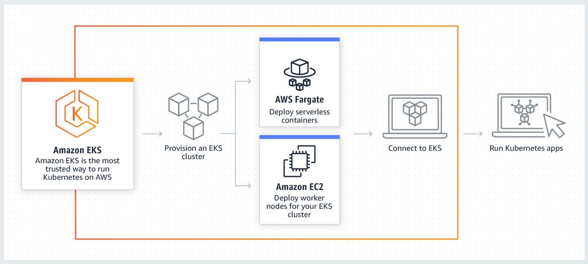

EKS Lab
You have already experimented with a local Kubernetes installation in the form of Minikube.
In the next step, we will set up a managed Kubernetes on AWS.
For this, we will use EKS, the Elastic Kubernetes Service.
This diagram shows how EKS works : 
EKS Cluster Deployment
To facilitate the instantiation of Kubernetes, we will use eksctl, a command line tool interact with Kubernetes.
To install it, please follow the guidelines here.
After the installation, please download the following file:
Danger
It is absolutely necessary that you use the file above for cluster definition.
The AWS Educate has certain limitations that makes the "standard" installation fail.
You can then instantiate an EKS cluster by simply executing the following command:
eksctl create cluster -f src/infra/eks-cluster.yaml
Tip
You can use --profile same as in aws commands to specify a specific profile if you have several AWS Accounts.
Configure Kubectl
Amazon EKS uses the aws eks get-token command, available in version 1.18.49 or later of the AWS CLI or the AWS IAM Authenticator for Kubernetes with kubectl for cluster authentication. If you have installed the AWS CLI on your system, then by default the AWS IAM Authenticator for Kubernetes will use the same credentials that are returned with the following command:
aws sts get-caller-identity
-
Ensure that you have version 1.18.49 or later of the AWS CLI installed. To install or upgrade the AWS CLI, see Installing the AWS Command Line Interface in the AWS Command Line Interface User Guide.
Warning
Your system's Python version must be 2.7.9 or later.
Otherwise, you receivehostname doesn't matcherrors with AWS CLI calls to Amazon EKS.You can check your AWS CLI version with the following command:
aws --version -
Use the AWS CLI
update-kubeconfigcommand to create or update your kubeconfig for your cluster.By default, the resulting configuration file is created at the default kubeconfig path
.kube/configin your home directory or merged with an existing kubeconfig at that location. You can specify another path with the--kubeconfigoption.aws eks --region <region-code> update-kubeconfig --name <cluster_name> -
Test your configuration.
kubectl get svcOutput:
NAME TYPE CLUSTER-IP EXTERNAL-IP PORT(S) AGE svc/kubernetes ClusterIP 10.100.0.1 <none> 443/TCP 1mTip
If you receive the error
"aws-iam-authenticator": executable file not found in $PATH, your kubectl isn't configured for Amazon EKS.
For more information, see Installingaws-iam-authenticator.
(More details & troubleshooting here)
Chart deployment
-
Install Helm backend service
- Tiller service account (Tiller is the Helm server-side component) :
kubectl create serviceaccount tiller --namespace kube-system -
Create the service-account.yaml file in your repo
apiVersion: v1 kind: ServiceAccount metadata: name: tiller namespace: kube-system -
Create the rbac-config.yaml file in your repo
kind: ClusterRoleBinding apiVersion: rbac.authorization.k8s.io/v1 metadata: name: tiller-role-binding roleRef: kind: ClusterRole name: cluster-admin apiGroup: rbac.authorization.k8s.io subjects: - kind: ServiceAccount name: tiller namespace: kube-system -
Run apply commands and helm init
kubectl apply -f src/infra/service-account.yaml kubectl apply -f src/infra/rbac-config.yaml helm init --service-account tiller -
We can see tiller-deploy is a running pod in kube-system namespace :
kubectl get pods --namespace kube-system | grep tiller tiller-deploy-758bcdc94f-4c77s 0/1 Pending 0 71s kubectl get pods --namespace kube-system | grep tiller tiller-deploy-758bcdc94f-4c77s 0/1 Running 0 92s
- Tiller service account (Tiller is the Helm server-side component) :
-
Deploy our Chart
-
Deploy the chart from previous Labs :
helm install --name silly-unicorn src/helm/chart/yncrea-hellomicroNote
Helm CLI is using the same config file as Kubectl, nothing to change here to target EKS !
-
Check running pods / services :
kubectl.exe get pods NAME READY STATUS RESTARTS AGE yncrea-hellomicro-646cb8c96-5g7td 1/1 Running 0 kubectl.exe get services NAME TYPE CLUSTER-IP EXTERNAL-IP PORT(S) AGE kubernetes ClusterIP 10.100.0.1 <none> 443/TCP 15m yncrea-hellomicro-service NodePort 10.100.136.153 <none> 80:30080/TCP 51s -
Add an
Inbound Ruleon the Security Groupeks-nodegroupto allow TCP traffic from all IPs to your worker node on port30080. -
Connect to your worker node EC2 instance public DNS Name on port
30080and check your micro service is running fine.Success
Congratulations ! You are able to deploy Chart in EKS !
-
Github Action
After the cluster installation, it's time to extend your Github Actions workflow to launch the deployment in Kubernetes.
You'll need to extend your workflow with the following lines:
1 2 3 | |
Note
We won't set up the EKS cluster creation in Github Actions as it is heavy and not useful to deploy / update at each commit.
Success
Congratulations ! At this point you are able to build and test Docker Images (CI) and use them in a Helm Chart, automatically deployed on AWS EKS (CD) !
Followup Exercise
-
Create a CF file to add the missing Application Load Balancer to your Infra, in order to access your micro service by a fixed DNS Name.
-
Analyze the file
cf-all.yamlused in the Cloud Formation Linting chapter. Once you understand everything, deploy it to have your first app example using a Database !